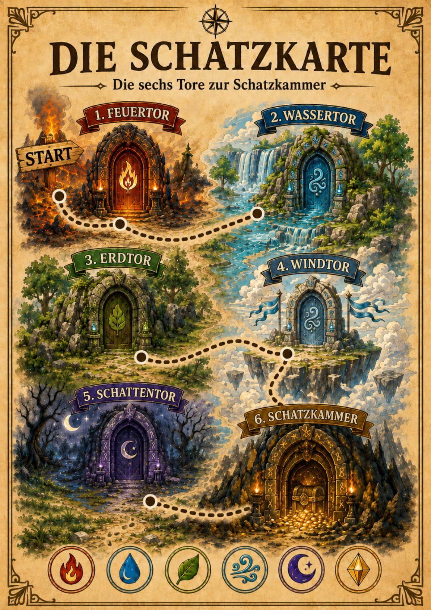
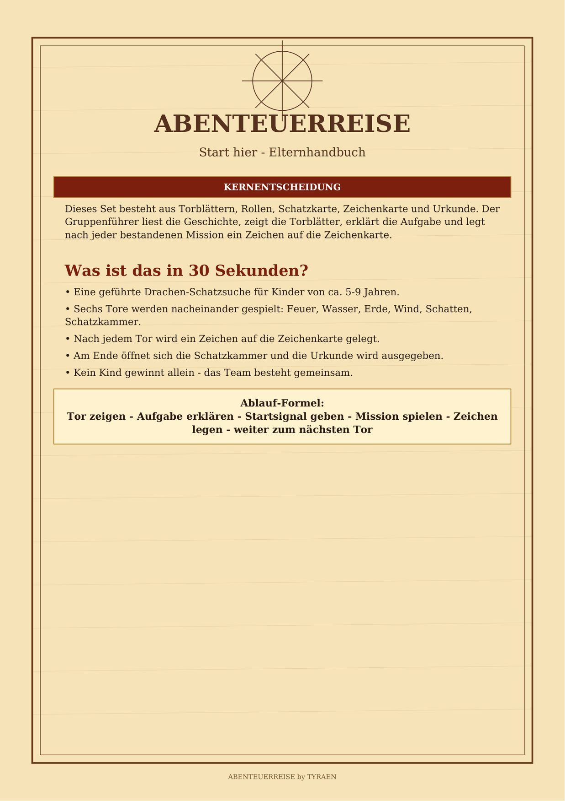
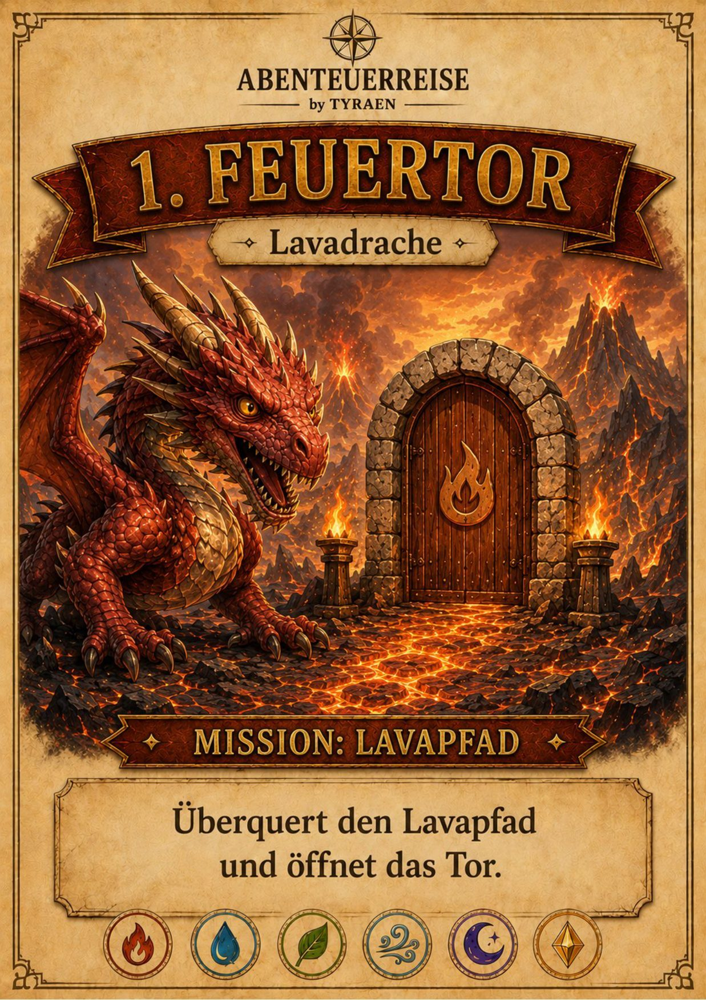
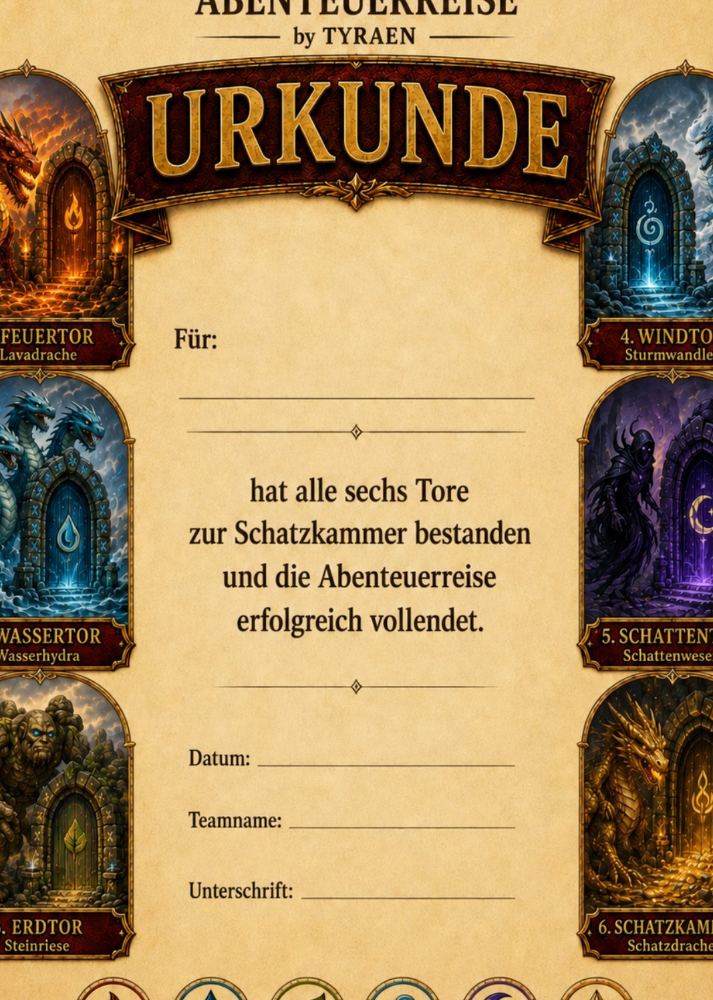

Elternhandbuch
Start-hier-Datei mit Vorbereitung, Druckhinweisen, Materialliste, Aufbau und Zeitgefühl für den Geburtstag.
Fertige PDF-Schatzsuche für Kindergeburtstage
Ein fertiges Kindergeburtstags-Abenteuer mit sechs Toren, Schatzkarte, Ausweisen, Urkunde und klarer Anleitung für Eltern.
Digitaler Download · Zum Selbstausdrucken · Für Kinder ca. 5-9 Jahre

Problem
Lösung
TYRAEN liefert einen vorbereiteten Ablauf: drucken, vorbereiten, Tor für Tor spielen, Schatzkammer öffnen.
Was ist enthalten?
Das Produkt besteht aus Elternhandbuch, Gruppenführer-Spielbuch und Druckvorlagen. Die Materialien sind so aufgebaut, dass Erwachsene den Ablauf führen können, ohne während der Feier neu planen zu müssen.
Start-hier-Datei mit Vorbereitung, Druckhinweisen, Materialliste, Aufbau und Zeitgefühl für den Geburtstag.
Vorlesetexte, Regeln, Aufgaben und klare Übergänge von einem Tor zum nächsten.
Ein sichtbarer Rahmen für die Reise zur Schatzkammer und den Abschluss der Schatzsuche.
Nach jedem bestandenen Tor wird ein Zeichen gesammelt. Das hält die Gruppe im Abenteuer.
Zum Ausschneiden, Ausfüllen und Verteilen, damit Kinder direkt eine Rolle im Spiel bekommen.
Feuertor, Wassertor, Erdtor, Windtor, Schattentor und Schatzkammer als vorbereitete Stationen.
Ein ruhiger, wertiger Abschluss nach dem Öffnen der Schatzkammer.
Indoor-taugliche Hinweise, wenn Garten oder Park am Geburtstag nicht funktionieren.
Kurze Hilfe, wenn Kinder unruhig werden, die Zeit knapp wird oder eine Aufgabe vereinfacht werden soll.
So funktioniert es
Der Ablauf bleibt bewusst praktisch: erst vorbereiten, dann Schritt für Schritt durch die sechs Tore führen.
Nach dem Kauf über Etsy bekommst du die digitalen Dateien.
Du druckst die wichtigsten Spielseiten und legst die Anleitung bereit.
Abenteuerausweise, Zeichenkarte und Stationen werden vor der Feier vorbereitet.
Die Kinder lösen Tor für Tor Aufgaben und sammeln sichtbaren Fortschritt.
Am Ende folgen Schatz, Mitgebsel oder Urkunde als gemeinsamer Abschluss.
Bilder und Produktvorschau
Keine künstlichen Produktfotos: Die Vorschau zeigt echte Seiten aus dem PDF, damit Eltern Stil, Umfang und Drucklogik vor dem Kauf einschätzen können.



Warum TYRAEN?
Die Seite verkauft kein vages Fantasy-Gefühl, sondern ein fertiges Spielsystem für einen echten Nachmittag mit Kindern.
Start, Stationen, Finale und Übergänge sind vorbereitet.
Du siehst vorher, was du zusätzlich brauchst.
Wohnung, Garten, Park oder überdachter Bereich sind möglich.
Der Ablauf lässt sich verkürzen, wenn die Gruppe müde wird.
Ein Plan B ist direkt mitgedacht.
Kurze Hinweise helfen, wenn die Gruppe zwischendurch kippt.
Für wen geeignet?
Je nach Gruppe kann mehr vorgelesen, vereinfacht oder selbst gelöst werden.
Praktisch für typische Kindergeburtstage und kleine Gruppen.
Die Stationen lassen sich an vorhandenen Platz anpassen.
Geeignet für Kindergeburtstag, Familiennachmittag oder eine geplante Schatzsuche.
FAQ
Nein. TYRAEN ist ein digitaler Download über Etsy. Du erhältst PDF-Dateien und druckst sie selbst aus.
Nein. Für den Start reichen die wichtigsten Spielseiten. Anleitung und zusätzliche Hinweise kannst du auch am Bildschirm lesen.
Ja. Das Set enthält einen Schlechtwetter- und Indoor-Plan für Wohnung, Flur oder überdachte Bereiche.
Für Kinder ca. 5-9 Jahre. Je nach Gruppe kannst du Aufgaben kürzen, stärker begleiten oder mehr selbst lösen lassen.
Drucker, Papier oder Karton, Schere, Stifte, kleine Materialien aus dem Haushalt und einen Schatz oder Mitgebsel.
Erst prüfen, dann kaufen
Sieh dir die Beispielseiten an oder öffne direkt das Etsy-Angebot. So erkennst du schnell, ob Stil, Umfang und Vorbereitung zu eurem Kindergeburtstag passen.
Digitaler Download. Kein Versand eines physischen Produkts.